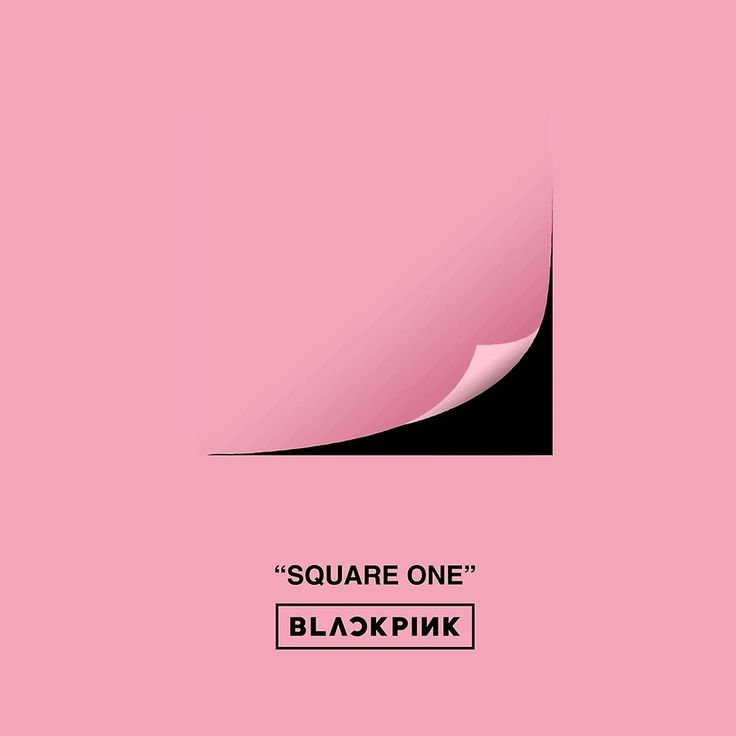
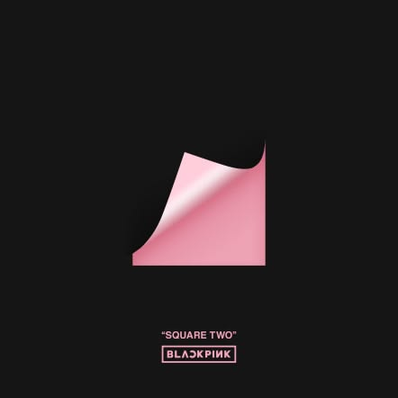
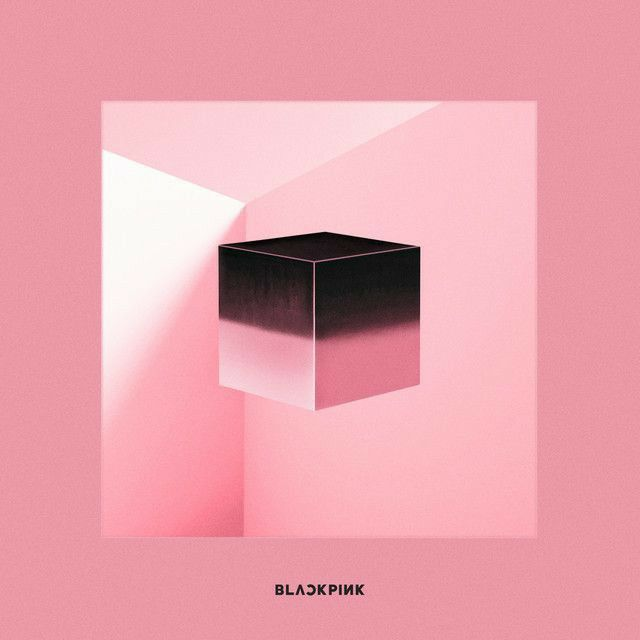
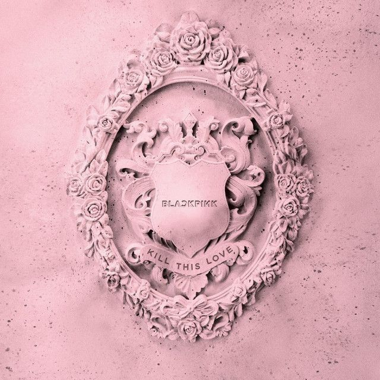
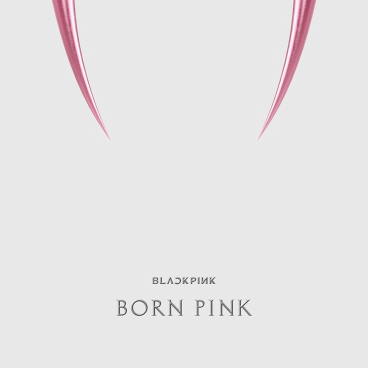
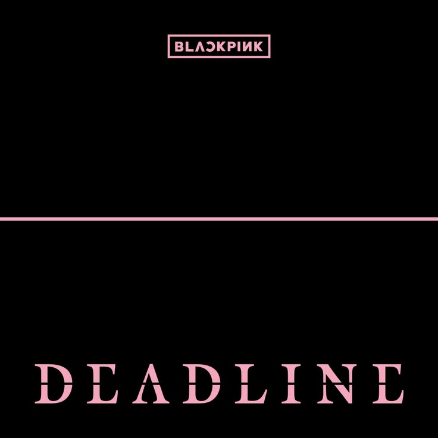

O BLACKPINK possui uma discografia pequena pelo tamnho do grupo, mas isso não as impediu de fazer sucesso. Ao total o BLACKPINK tem 7 álbuns, sendo eles minis álbuns, álbuns de studio, e singles álbuns. E estes álbuns são:
1. SQUARE ONE — 2016
Foi o lançamento de estreia do BLACKPINK, em 8 de agosto de 2016, debutando com “BOOMBAYAH” e “WHISTLE” acumulando 1,4 bilhões de vizualizações

2. SQUARE TWO — 2016
Lançado em 1º de novembro de 2016, com destaque para “Playing with Fire” e “Stay”. A YG classifica como o segundo single album. tendo 1,1 bilhões de vizualizações

3. SQUARE UP — 2018
Lançado em 15 de junho de 2018, foi o primeiro mini álbum do grupo e trouxe “DDU-DU DDU-DU”, um dos maiores sucessos do BLACKPINK e tem 1,9 bilhões de vizualizações

4. KILL THIS LOVE — 2019
Segundo mini álbum, lançado em 5 de abril de 2019, e trouxe outro suucesso do BLACKPINK "kill this love" e tem 2,3 bilhões de vizualizações

5. THE ALBUM — 2020
Primeiro álbum completo do BLACKPINK, lançado em 2 de outubro de 2020, com oito faixas. No Spotify, é atualmente o álbum do grupo com mais streams, passando de 4,3 bilhões.

6. BORN PINK — 2022
Segundo álbum completo, lançado em 16 de setembro de 2022, também com oito faixas. Atualmente possui cerca de 3,52 bilhões de streams no Spotify.

7. DEADLINE — 2026
Terceiro mini álbum, lançado em 27 de fevereiro de 2026, com cinco faixas. É o lançamento mais recente do grupo e já ultrapassou 900 milhões de streams no Spotify.

Voltar